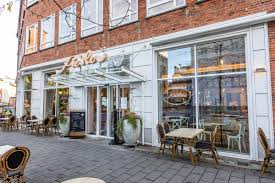
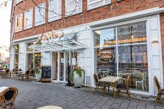

Fachhochschule Kiel
University of Applied Sciences

University of Applied Sciences
Kiel is more than just a city — it's a student-friendly coastal hub with a dynamic atmosphere. Located in northern Germany, Kiel offers a blend of urban convenience and natural beauty along the Baltic Sea.
Compared to other German cities, Kiel offers budget-friendly living, especially for students — from accommodation to food and transport.
Kiel is known for its safety and warm-hearted community, making it a perfect place for international students to feel at home.
With cozy cafés, libraries, parks, and a calm seaside vibe, Kiel is ideal for study and relaxation.
 

Kiel experiences a mild oceanic climate with cool summers and mild winters. Expect fresh sea breezes, and occasional rainfall — perfect for lovers of fresh air and dynamic skies.


overcast clouds